Если из обеих частей уравнения извлечь квадратный корень, то полýчится уравнение равносильное исходному.
Рассмотрим следующее уравнение:
x2 = 16
Это простейшее квадратное уравнение, имеющее два корня: 4 и −4. Такое уравнение мы решали используя определение квадратного корня.
Согласно определению квадратного корня, число b является квадратным корнем из числа a, если b2 = a и обозначается как b = √a.
Тогда в случае x2 = 16, можно записать что x = √16, откуда x = ±4.
Теперь решим данное квадратное уравнение путем извлечения квадратного корня из обеих частей уравнения.
«Обернём» обе части уравнения x2 = 16 в квадратный корень:
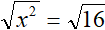
Теперь вспоминаем одно из свойств квадратного корня, которое гласит что квадратный корень из квадрата числа равен модулю этого числа
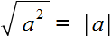
Тогда в левой части нашего уравнения получим модуль из x, а в правой части число 4
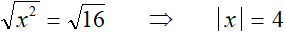
Получили простейшее уравнение с модулем. Оно имеет два корня: 4 и −4. Запишем это решение в виде совокупности уравнений:
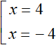
Проверка:
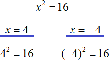
Из правой части уравнения x2 = 16 следует извлекать именно арифметический квадратный корень. Ранее мы говорили, что квадратный корень имеет два значения: положительное и отрицательное. То есть:
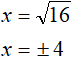
Но в данном случае нас интересует именно неотрицательное значение 4 (его и называют арифметическим квадратным корнем). Потому что если мы извлечем и второй корень (отрицательный −4), то получим уравнение |x|= −4 которое не имеет решений.
Пример 2. Решить уравнение 3x2 = 12
Решение
Разделим обе части на 3
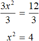
Извлечём квадратный корень из обеих частей получившегося уравнения:
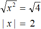
Получили простейшее уравнение с модулем. Решим его, сведя в совокупность:
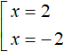
Ответ: 2 и −2.
Пример 3. Решить уравнение (x + 2)2 = 25
Решение
Извлечём квадратный корень из обеих частей получившегося уравнения:
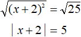
Решим получившееся уравнение с модулем:
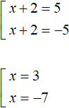
Ответ: 3 и −7.
Пример 4. Решить уравнение x2 − 10 = 39
Решение
Перенесем −10 в правую часть изменив знак:
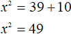
Извлечём квадратный корень из обеих частей получившегося уравнения:
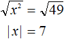
Решим получившееся уравнение с модулем:
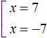
Ответ: 7 и −7.
Задания для самостоятельного решения
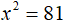
Показать решение
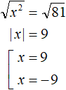
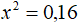
Показать решение
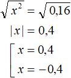
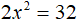
Показать решение
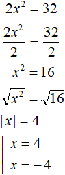
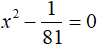
Показать решение
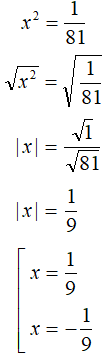
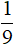
и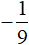
.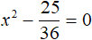
Показать решение
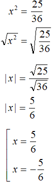
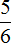
и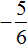
.Понравился урок?
Вступай в нашу новую группу Вконтакте и начни получать уведомления о новых уроках